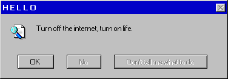
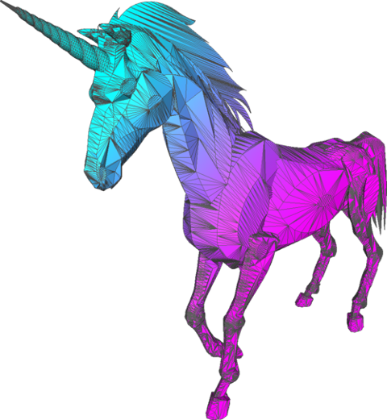

APairOfLevis95
APairOfLevis95
APairOfLevis95
APairOfLevis95
I'm an informaticist based in Texas. I started learning web development back in 2018 as a hobby. It didn't pan out the way I originally planned, but the problem solving skills I picked up along the way from self-taught YouTube tutorials helped me pivot into a career in informatics and data analysis. I still enjoy building projects on the side, and nowadays I utilize AI to help shape my ideas into reality. Sometimes I try to create things that are actually beneficial for people, and other times it's just plain fun silly projects that try to hearken back to the old days of the internet when people made things just to showcase their personality or their talent.
First and foremost I grew up in the 90s and still listen to golden age hip-hop. Anyone who lived during the 90s can remember the geocities websites that many a young teen created. I just really like the vaporwave style and wanted to make a website in a vaporwave format.
I work with Python, pandas, and SQL for data analysis at my day job. I'm still learning and getting better at all of it. On the web side I knew enough HTML, CSS, and JavaScript to be dangerous back in the day, and now I let AI do the heavy lifting. I also use Git and Photoshop when the situation calls for it.


you found me